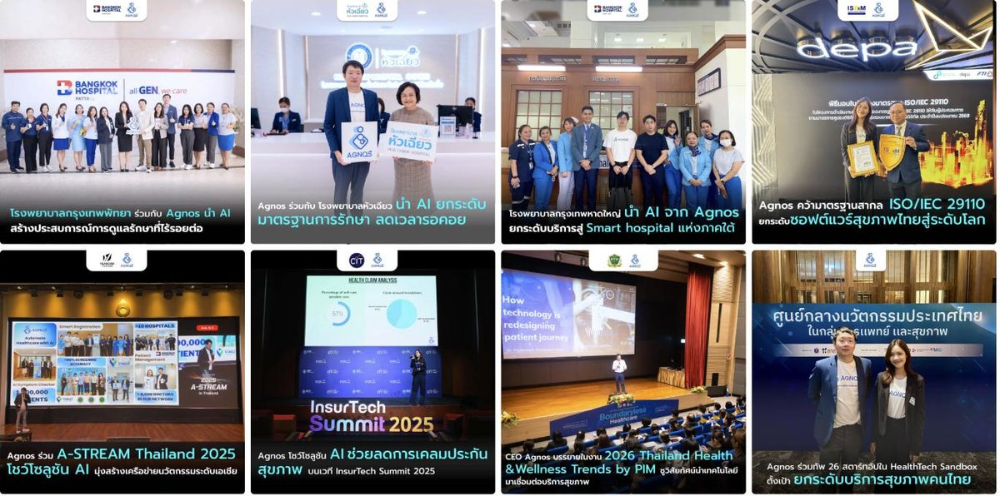

งานอื่นๆ
Content Production
งานเขียน ออกแบบ และวิดีโอที่ทำเองครบวงจร
Agnos Health · Copywriting · Graphic Design · Video Production

ตัวอย่างงานจริง — ปกและบทความข่าวองค์กรที่เขียนและออกแบบเอง จากทั้งหมด 50+ ชิ้น
RoleCopywriting · Scriptwriting · Graphic Design · Video Production & Editing
เครื่องมือCanva · Adobe Creative Cloud · Final Cut Pro
ช่วงเวลา2021 – 2026 (ต่อเนื่อง)
บทบาทและความเป็นเจ้าของงาน
- เขียนบทความและสคริปต์วิดีโอโดยอ้างอิงข้อมูลทางการแพทย์ (research-based copywriting)
- ออกแบบกราฟิกและ artwork สำหรับทุกช่องทางด้วย Canva และ Adobe Creative Cloud
- ถ่ายทำและตัดต่อวิดีโอเองตั้งแต่ pre-production จนถึง final cut ด้วย Final Cut Pro
- ควบคุมคุณภาพงานให้ตรงตาม brand guideline ทุกชิ้น โดยไม่ต้องพึ่งฟรีแลนซ์ในงานเร่งด่วน
โจทย์
ในสตาร์ทอัพที่มีทรัพยากรและเวลาจำกัด ไม่ใช่ทุกชิ้นงานที่จะส่งต่อให้ฟรีแลนซ์หรือทีมภายนอกได้ทัน
บางงานต้องออกจากไอเดียถึงงานพร้อมเผยแพร่ภายในวันเดียว โดยไม่มีเวลาบรีฟหรือรอรอบแก้ไขไปมาระหว่างหลายคน
โจทย์คือ "เป็นเจ้าของงานได้ตั้งแต่ต้นจนจบด้วยตัวเอง" เพื่อให้ทีมยังส่งงานได้ทันแม้ในช่วงที่ไม่มีฟรีแลนซ์ว่าง หรืองานเร่งด่วนที่รอไม่ได้
แนวทาง
ฉันเลือกเป็น "เจ้าของงานครบวงจรคนเดียว (Full-Stack Content Owner)"
เหตุผลเบื้องหลัง: เมื่อคนคนเดียวคิด เขียน ออกแบบ และตัดต่อเอง งานจะไม่มีจุดสูญเสียความหมายระหว่างการส่งต่อ (briefing loss)
แนวคิดที่อยู่ในหัวถูกแปลงเป็นงานจริงได้เร็วและตรงเจตนามากขึ้น เหมาะกับงานที่ต้องการความเร็วหรือมีรายละเอียดทางการแพทย์ที่ต้องแม่นยำ
สิ่งที่ทำได้ครบวงจร
01 Research-based Copywriting & Scriptwriting
เขียนบทความและสคริปต์วิดีโอโดยอิงข้อมูลทางการแพทย์จริง แปลศัพท์เทคนิคให้อ่านง่ายและน่าเชื่อถือ
02 Graphic Design & Artwork
ออกแบบภาพกราฟิกสำหรับโซเชียลมีเดียและเว็บไซต์ ให้ตรงตาม brand guideline ทุกชิ้น
03 Video Production & Editing
ถ่ายทำและตัดต่อวิดีโอสั้นเองตั้งแต่คิดคอนเซปต์ ถ่ายทำ จนถึง final cut พร้อมเผยแพร่
บทสรุปภาพรวม
งานชิ้นนี้ไม่มีตัวเลข reach หรือ growth เพราะมันไม่ใช่แคมเปญ แต่คือเหตุผลที่บรีฟของฉันแม่น —
คนที่เคยนั่งตัดต่อเองรู้ว่าอะไรทำเสร็จได้ในสองชั่วโมงและอะไรทำไม่ได้ ประเมินเวลาและความยากของงานทีมจึงคลาดเคลื่อนน้อยลง
และเมื่อจำเป็น ก็ลงมือทำเองได้ทันทีโดยไม่ทำให้ไทม์ไลน์สะดุด
สิ่งที่ได้เรียนรู้
- ทักษะลงมือทำคือรากฐานของการนำทีม: การเข้าใจงานผลิตจริงทำให้บรีฟทีมและประเมินเวลา/ความยากได้แม่นยำขึ้น
- ความเร็วมาจากการเป็นเจ้าของครบวงจร: เมื่อไม่ต้องส่งต่องานข้ามคน ไอเดียถึงงานจริงได้เร็วกว่ามาก
- ทักษะที่หลากหลายคือความยืดหยุ่นของทีมเล็ก: ในทีมเล็กๆ คนที่ทำได้หลายอย่างคือคนที่ทำให้งานไม่สะดุด
Other Work
Content Production
Writing, Design & Video, Owned End to End
Agnos Health · Copywriting · Graphic Design · Video Production
Real output — corporate news covers written and designed myself, from 50+ pieces total
RoleCopywriting · Scriptwriting · Graphic Design · Video Production & Editing
ToolsCanva · Adobe Creative Cloud · Final Cut Pro
Period2021 – 2026 (ongoing)
Role & Ownership
- Wrote articles and video scripts grounded in real medical information (research-based copywriting)
- Designed graphics and artwork for every channel using Canva and Adobe Creative Cloud
- Shot and edited video myself, from pre-production through to final cut in Final Cut Pro
- Kept every piece on-brand without needing to route urgent work through freelancers
Challenge
At a resource- and time-constrained startup, not every piece can be handed off to a freelancer or outside team in
time. Some work has to go from idea to publish-ready within a single day, with no time for briefing back and forth
between multiple people.
The task: "own a piece end to end myself," so the team could still ship even when no freelancer was available or
when a request couldn't wait.
Approach
I became a full-stack content owner — writing, designing, and editing the same piece myself.
The reasoning: when one person thinks, writes, designs and edits, there's no briefing loss between handoffs. Ideas
turn into finished work faster and closer to intent — especially useful for time-sensitive work or pieces with
medical details that need to stay accurate.
What I Can Own End to End
01 Research-based Copywriting & Scriptwriting
Writing articles and video scripts grounded in real medical information, translating technical terms into something readable and trustworthy.
02 Graphic Design & Artwork
Designing graphics for social media and the website, on-brand every time.
03 Video Production & Editing
Shooting and editing short-form video myself, from concept through to a publish-ready final cut.
Outcome
There's no reach or growth number here because this isn't a campaign — it's why my briefs are accurate.
Someone who has sat through the edit themselves knows what two hours can and can't produce, so time and
difficulty estimates drift far less. And when it's needed, I can pick the work up myself without stalling the timeline.
Key Learnings
- Hands-on craft is the foundation of leading a team: understanding real production work makes briefing and estimating time or difficulty far more accurate.
- Speed comes from full ownership: without handoffs between people, ideas become finished work much faster.
- Range is what keeps a small team unstuck: in a lean team, the person who can do several things is the one who keeps work from stalling.